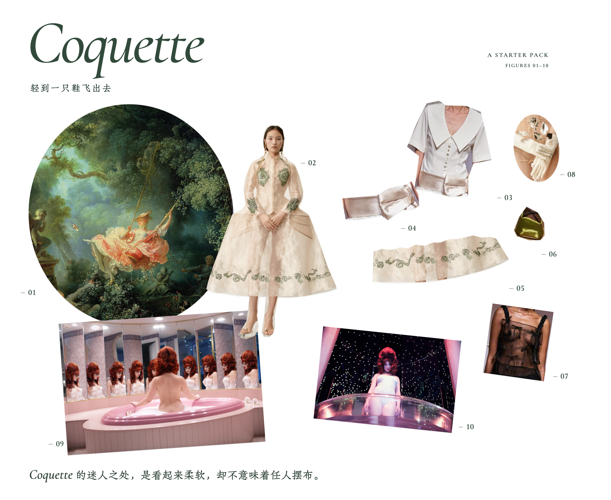

<!doctype html><html lang="zh-CN"><meta charset="utf-8"><meta name="viewport" content="width=device-width,initial-scale=1"><title>Coquette · 黑框比较</title><style>*{box-sizing:border-box}body{margin:0;padding:28px;background:#eeede8;color:#24221f;font:14px/1.7 system-ui}header{max-width:1600px;margin:auto}h1{font:24px/1.5 Georgia,"Songti SC",serif;margin:0 0 8px}p{margin:8px 0}nav{display:flex;gap:8px;flex-wrap:wrap;margin:18px 0}button{font:inherit;background:transparent;color:inherit;padding:7px 14px;border:1px solid #b6b4ac;border-radius:4px;cursor:pointer}button[aria-pressed=true]{background:#24221f;color:white;border-color:#24221f}button:focus-visible{outline:2px solid #324a3b;outline-offset:3px}.grid{display:grid;grid-template-columns:repeat(3,minmax(0,1fr));gap:22px;max-width:1600px;margin:24px auto}.grid.focus{display:block;max-width:1400px}.grid.mobile.focus{max-width:438px}.grid.mobile{max-width:1240px}figure{margin:0;min-width:0}figure[hidden]{display:none}figcaption{margin:0 0 10px;font-size:14px}figcaption small{display:block;color:#76736b;font-size:12px;margin-top:3px}.mat{position:relative;padding:26px;background:#fff}.mat:after,.mat:before{content:"";position:absolute;pointer-events:none}.mat.single:after{inset:10px;border:1.5px solid #24221f}.mat.double:after{inset:10px;border:1.5px solid #24221f}.mat.double:before{inset:17px;border:.6px solid #24221f}img{display:block;width:100%;height:auto}.mobile .mat{padding:16px}.mobile .mat.single:after,.mobile .mat.double:after{inset:5px}.mobile .mat.double:before{inset:10px}footer{max-width:1600px;margin:24px auto;color:#68665f;font-size:12px}a{color:inherit}@media(max-width:700px){body{padding:18px}.grid{grid-template-columns:1fr;gap:32px}.mat{padding:18px}}</style><header><h1>同一张看板，三种边界</h1><p>先看外框如何改变整页感觉，再决定是否用于风格图录。</p><nav aria-label="画幅"><button data-device="desktop" aria-pressed="true">桌面</button><button data-device="mobile" aria-pressed="false">手机</button></nav><nav aria-label="方案"><button data-mode="all" aria-pressed="true">三版并排</button><button data-mode="none" aria-pressed="false">A · 无框</button><button data-mode="single" aria-pressed="false">B · 单细黑框</button><button data-mode="double" aria-pressed="false">C · 双细线框</button></nav></header><main class="grid"><figure data-variant="none"><figcaption>A · 无框<small>开阔，物件比较自由。</small></figcaption><div class="mat none"></div></figure><figure data-variant="single"><figcaption>B · 单细黑框<small>一道墨线，收成完整图版。</small></figcaption><div class="mat single"></div></figure><figure data-variant="double"><figcaption>C · 双细线框<small>增加层次，书页感更明显。</small></figcaption><div class="mat double"></div></figure></main><footer>本页用于外框比较：原第三版整板图完整保留，框线由独立CSS绘制。手机为静态框线研究，外框加入后画面略缩；正式页面的文字与留白还需单独适配。第三版原页面、Figma及网站保持不变。</footer><script>const images={"desktop": "previews/desktop.png", "mobile": "previews/mobile.png"};let device='desktop',mode='all';function paint(){const grid=document.querySelector('.grid');grid.classList.toggle('mobile',device==='mobile');grid.classList.toggle('focus',mode!=='all');document.querySelectorAll('figure').forEach(f=>{f.hidden=mode!=='all'&&f.dataset.variant!==mode;f.querySelector('img').src=images[device]});document.querySelectorAll('[data-device]').forEach(b=>b.setAttribute('aria-pressed',b.dataset.device===device));document.querySelectorAll('[data-mode]').forEach(b=>b.setAttribute('aria-pressed',b.dataset.mode===mode))}document.querySelectorAll('[data-device]').forEach(b=>b.onclick=()=>{device=b.dataset.device;paint()});document.querySelectorAll('[data-mode]').forEach(b=>b.onclick=()=>{mode=b.dataset.mode;paint()});</script></html>